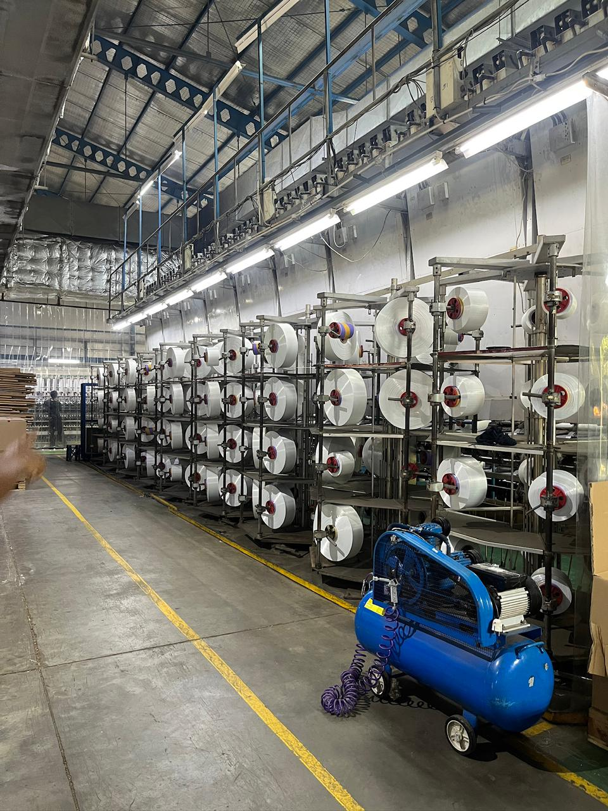
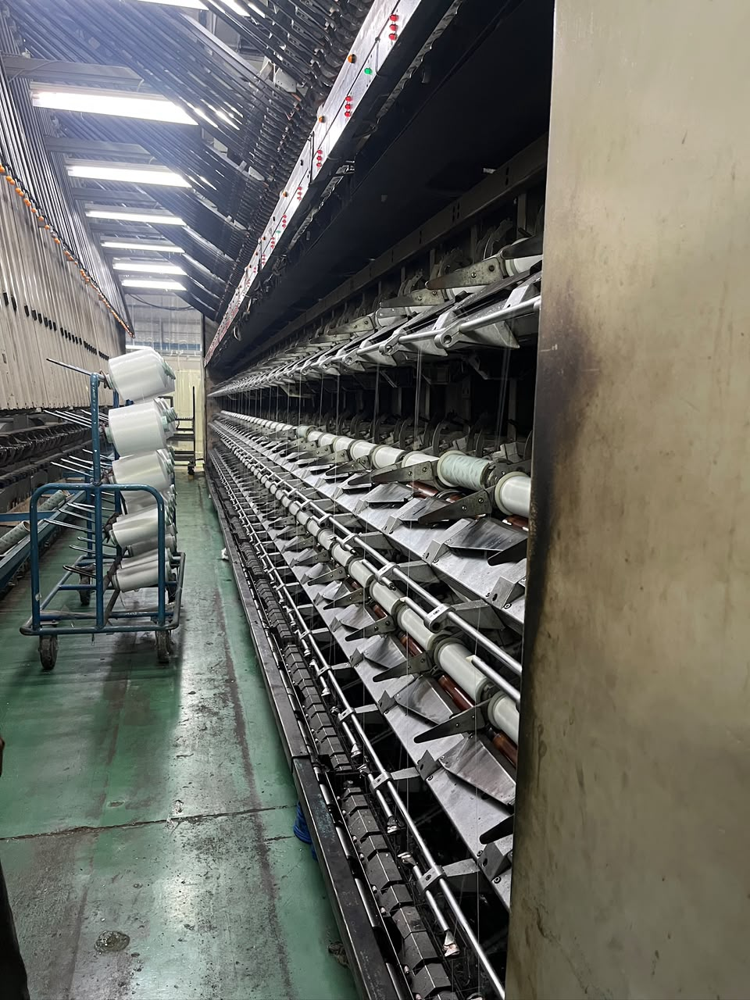
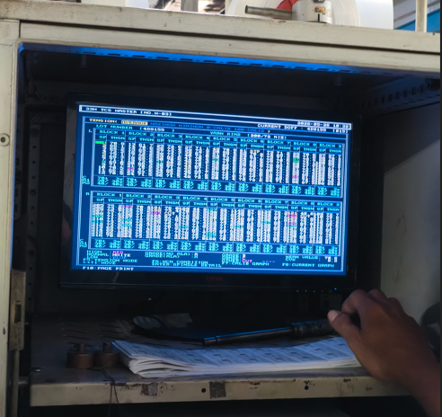
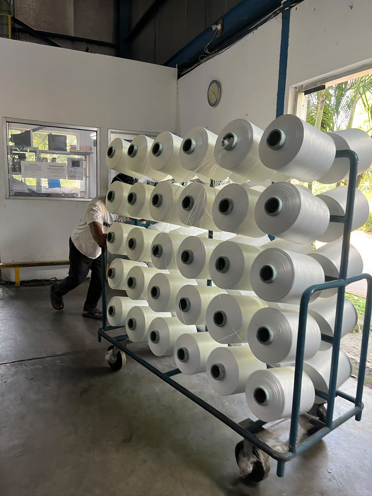
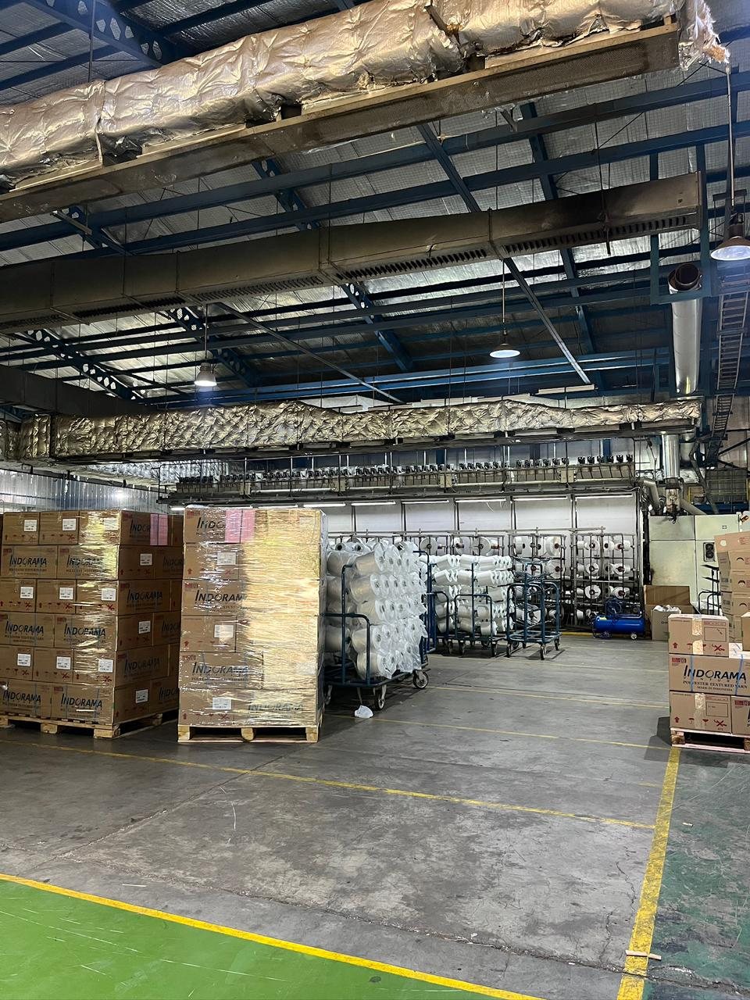
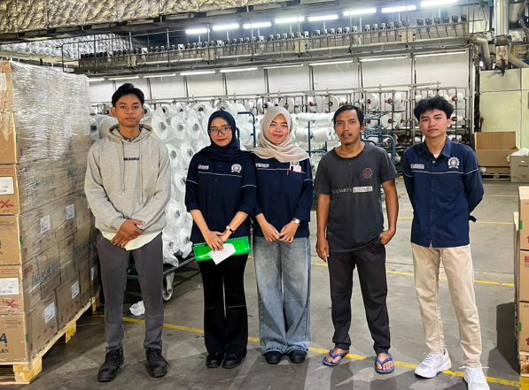

Siklus Manufaktur
8 Tahapan Transformasi DTY
Protokol pengolahan berjenjang yang diintegrasikan dengan pengawasan suhu, tarikan, dan mutu di setiap titik produksi.
Persiapan Material (POY)
Siklus ini bermula dengan penyediaan material setengah jadi yang dinamakan benang POY (Partially Oriented Yarn). Serat mentah yang merupakan hasil keluaran dari area polimerisasi ini akan digunakan sebagai basis input pembuatan DTY.


Fase Penarikan (Drafting)
Dalam operasional mesin, spun yarn atau POY wajib melewati mekanisme penarikan. Tahapan ini secara instan memanipulasi spesifikasi bawaan POY, baik dari segi sifat lentur, ukuran diameter, hingga panjang filamen.
Rekayasa Termal (Heating)
Area texturising mengandalkan dua zona suhu. Primary Heater (H1) bertugas melunakkan serat POY mentah agar mengembang (crimp & crinkle), sedangkan Secondary Heater (H2) berfungsi vital menstabilkan wujud benang pasca-ditarik.


Distorsi Mekanis (Twisting)
Pemuntiran (twisting) bekerja secara simultan bersama proses penarikan. Intervensi friksi ini sukses memberikan efek volume dan keriting permanen pada jalinan benang poliester.
Mekanisme Penggulungan (Winding)
Langkah penutup dari aktivitas texturising di dalam mesin adalah penggulungan (winding). Benang yang kini resmi bertekstur DTY ditarik keluar secara terkomputerisasi menuju area penggulungan akhir.


Evaluasi Kelayakan (Uji Celup)
Sampel benang dikirim ke fasilitas pengujian mutu untuk memastikan kemampuan penyerapan zat pewarna merata tanpa indikasi cacat pudar atau belang. Hal ini berkaitan dengan keberhasilan pemanasan kristal polimer sebelumnya.
Sertifikasi Kelas (Grading)
Pasca evaluasi, faktor kualitas benang dipetakan ke dalam berbagai hierarki atau Grade berdasarkan parameter berat dan tingkat keutuhannya. Produk yang gagal memenuhi batas berat standar dipisahkan dari alur distribusi reguler.

Distribusi Sektor Tekstil
Benang bertekstur (DTY) ini membanjiri industri manufaktur untuk difabrikasi menjadi pakaian, material penutup jok, hingga pembuatan tas. Permintaan benang ini sangat masif di sektor industri tenun maupun rajut.